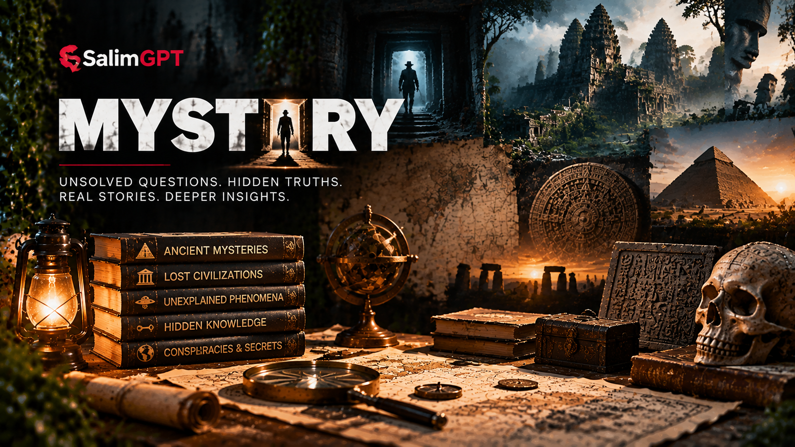

Historical Mysteries
Missing records, disputed events, unknown identities, unexplained decisions and questions that remain open within the historical record.
DOCUMENTARY TOPIC
Explore unresolved questions, unusual events, disputed accounts, historical puzzles and subjects where the available evidence does not yet provide a simple or complete explanation.
Mystery is a broad discovery gateway rather than a category for assuming extraordinary explanations. A SalimGPT documentary may investigate a widely known unresolved case or focus on one document, location, observation, disappearance, anomaly, disputed claim or narrowly defined unanswered question.

QUESTIONS WITHOUT SIMPLE ANSWERS
Mystery documentary research may examine a major unresolved event or concentrate on one missing record, conflicting account, unusual observation, unexplained detail or disputed interpretation. The areas below are examples, not a complete classification.
Missing records, disputed events, unknown identities, unexplained decisions and questions that remain open within the historical record.
Disappearances, lost objects, missing documents and unresolved gaps where available evidence may support multiple possibilities.
Observations, patterns or phenomena that require careful examination of data, methods, alternative explanations and scientific uncertainty.
Locations associated with unusual events, disputed stories or unanswered questions that can be examined through records and available evidence.
Cases where sources, witnesses, interpretations or public claims disagree and require comparison rather than assumption.
One photograph, statement, artifact, timeline gap, observation or highly specific unresolved detail can become the basis of a complete documentary.
NOT LIMITED TO THESE AREAS
These examples support discovery, but they do not define the limits of SalimGPT's mystery documentaries. A subject may be historical, scientific, social, technological, local, global or interdisciplinary. What matters is that the question can be investigated through evidence, source comparison and transparent treatment of uncertainty.
EVIDENCE BEFORE EXPLANATION
Mystery documentary research may involve historical records, scientific studies, official documents, photographs, maps, testimony, reporting, archived material and other sources relevant to the question.
When evidence is incomplete or competing explanations remain plausible, SalimGPT aims to identify those limitations clearly rather than presenting speculation as established fact. Documented evidence, claims, interpretations and unresolved questions should remain distinguishable from one another.
DOCUMENTARY APPROACH
Unresolved subjects can contain established facts, uncertain evidence, competing interpretations and claims with little support. Keeping those categories separate is central to responsible mystery storytelling.
Establish dates, records, physical evidence and other verifiable information before considering broader explanations.
When more than one interpretation exists, examine what evidence supports or challenges each relevant explanation.
Clearly distinguish what is known, what is inferred and what information remains unavailable or uncertain.
A documentary does not need to manufacture a final answer when the available evidence cannot support one.
MULTILINGUAL DISCOVERY
Documentary availability and localized presentation may differ between SalimGPT language editions.
রহস্য, অমীমাংসিত প্রশ্ন ও প্রমাণভিত্তিক অনুসন্ধান নিয়ে বাংলা ডকুমেন্টারি দেখুন।
Explore mystery documentary subjects and unresolved questions in English.
रहस्य, अनसुलझे प्रश्न और प्रमाण-आधारित जांच से जुड़े विषयों पर हिन्दी डॉक्यूमेंट्री देखें।